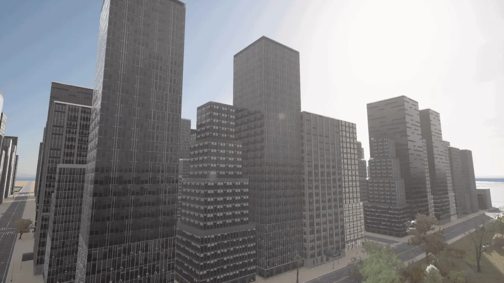
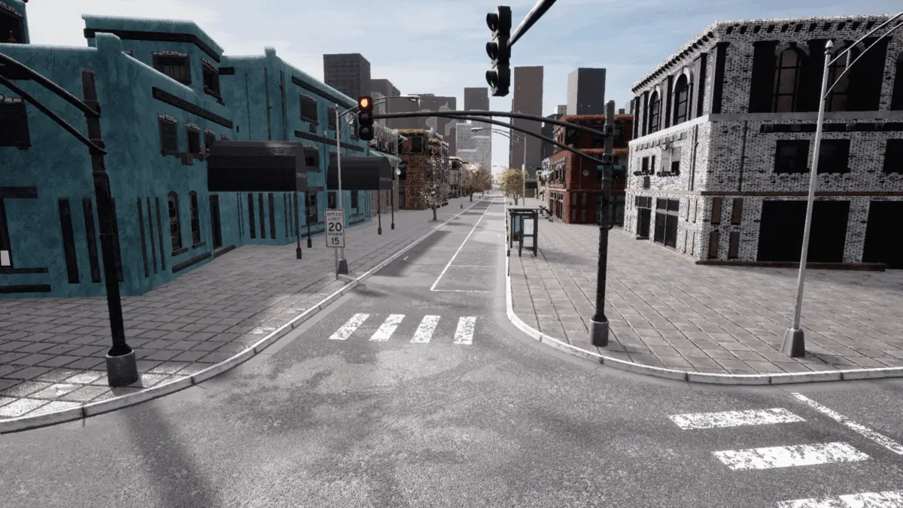
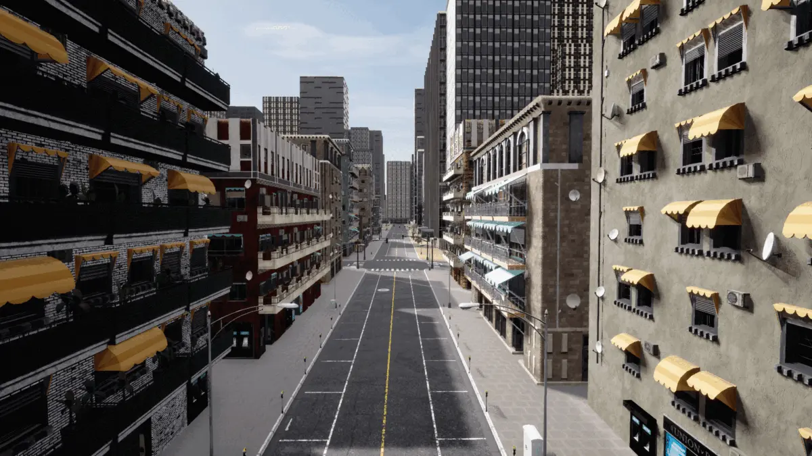
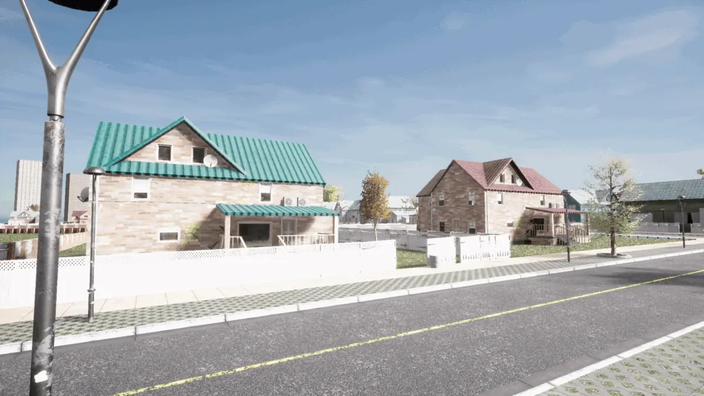
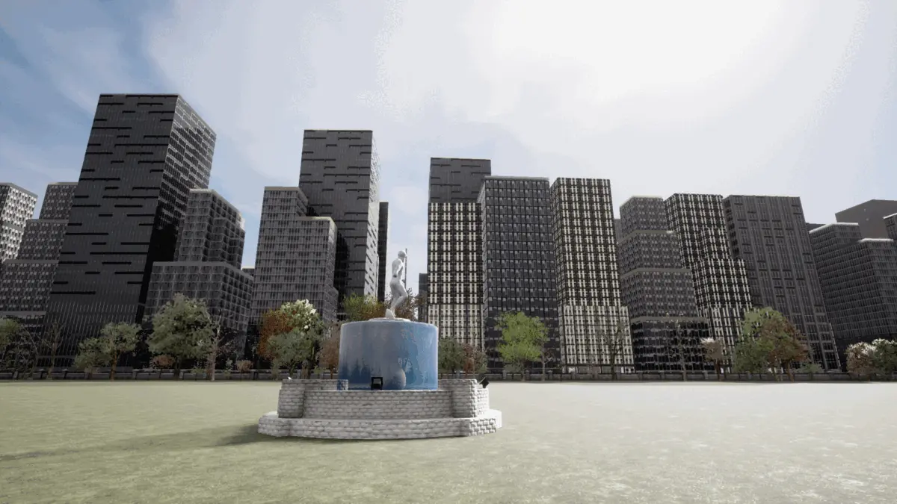
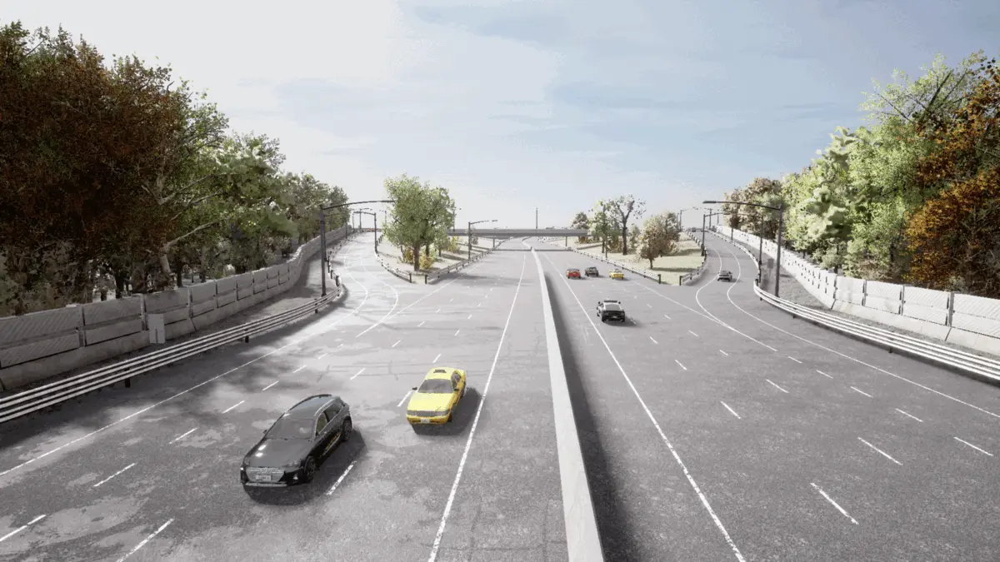
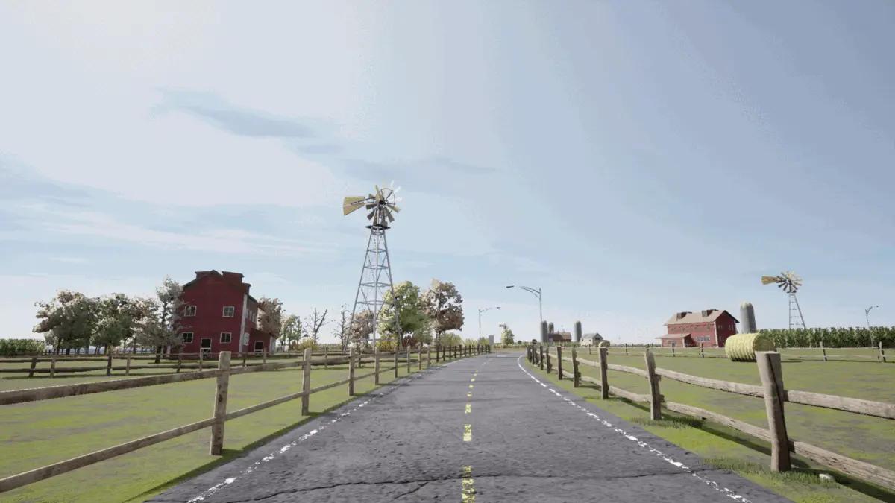
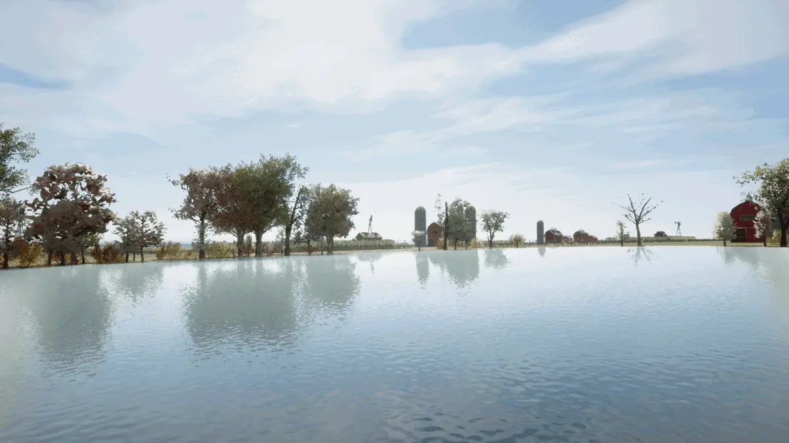

Town 13

Town 13 is a Large Map with dimensions of 10x10 km2. It is divided into 36 tiles, most with dimensions of 2x2 km2 (some edge tiles are smaller). There are numerous contrasting regions to the city including urban, residential and rural areas, along with a large highway system surrounding the city with a ringroad. The architectural styles reflect those of many medium to large cities across North America.
Note
Town 13 has been designed as an adjunct to Town 12, such that they can serve as a train-test pair. The towns share many common features, but also many differences in the styles of buildings, road textures, pavement textures and also vegetation. Using one of the pair to produce training data and then using the other for testing is ideal for exposing overfitting issues that might be arising while developing an AD stack.
Navigator
The navigator interactive map can be used to browse the town and derive coordinates to use in the CARLA simulator.
Using the navigator:
left mouse button- click and hold, drag left, right, up or down to move the mapscroll mouse wheel- scroll down to zoom out, scroll up to zoom in on the location under the mouse pointerdouble click- double click on a point on the map to record the coordinates, you will find the coordinates in the text and the code block just below the map
Zone color reference:
-   Skyscraper
-   High density residential
-   Community buildings
-   Low density residential
-   Parks
-   Rural farmland
-   Water

CARLA coordinates:
- X: --
- Y: --
After double clicking on a point of interest, the navigator will display the corresponding CARLA coordinates and update them in the following code block. Copy and paste the code into a notebook or Python terminal to translate the spectator to the desired location. You will need first to connect the client and set up the world object:
# CARLA coordinates: X 0.0, Y 0.0
spectator = world.get_spectator()
loc = carla.Location(0.0, 0.0, 300.0)
rot = carla.Rotation(pitch=-90, yaw=0.0, roll=0.0)
spectator.set_transform(carla.Transform(loc, rot))
Town 13 zones
High-rise downtown:
Town 13's downtown area is a large span of high-rise skyscrapers arranged into blocks on a consistent grid of roads, resembling downtown areas in many large American and European cities.
Community buildings:
The community buildings are a set of 2-4 storey apartment buildings in a colorful bohemian style with businesses on the ground floors, located next to the downtown area of the city.

High density residential:
The high density residential areas of Town 13 have many 2-10 storey apartment buildings with commercial properties like cafes and retail stores at street level. Many of the residential blocks have balconies with sun shades similar to those in sunny southern European countries.

Low density residential:
The low density residential regions of Town 13 reflect the suburbs of many European cities, with one and two story homes surrounded by fenced gardens and garages.

Parks:
The dense residential and downtown areas are broken up by small islands of green communal space, juxtaposing green foliage against urban architecture.

Highways and intersections:
Town 13 has an extensive highway system, including 3-4 lane highways, large roundabouts and a causeway over a large body of water.

Rural and farmland:
Town 13 also has rural regions with characteristic farmland buildings like wooden barns and farmhouses, windmills, grain silos, corn fields, hay bails and rural fencing. These areas have unmarked country dirt roads and single lane interurban roads for inter-city traffic.

Water:
There are several bodies of water in town 13 including a large lake with a central island and several ponds in rural areas.
